Galéria a výstavy
Priestor pre subkultúrne umenie, street art, fotografiu, grafiku, ilustráciu, objekty a experimentálne formy vizuálnej tvorby.
Odovzdávacia stanica tepla Bratislava
Kedysi odovzdávala teplo.
Dnes môže odovzdávať energiu kultúre.
OST 960 je pripravovaný nezávislý kultúrny priestor v Karlovej Vsi. Industriálny objekt chceme premeniť na galériu, komunitné miesto a otvorenú platformu pre subkultúrne, mestské a nezávislé umenie v Bratislave.
OST 960 vzniká ako neziskový kultúrny projekt s cieľom oživiť priestor bývalej odovzdávacej stanice tepla a sprístupniť ho verejnosti.
Chceme vytvoriť miesto, kde sa stretáva umenie, komunita, experiment, lokálna scéna a ľudia, ktorí hľadajú kultúru mimo mainstreamu.
Toto je skutočný priestor. Práve sa buduje. Každý záber je autentický dokument premeny industriálneho objektu na kultúrne miesto.
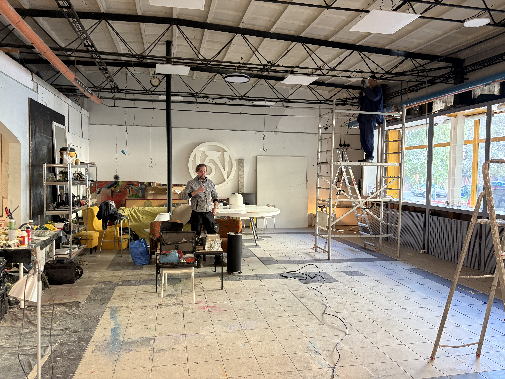
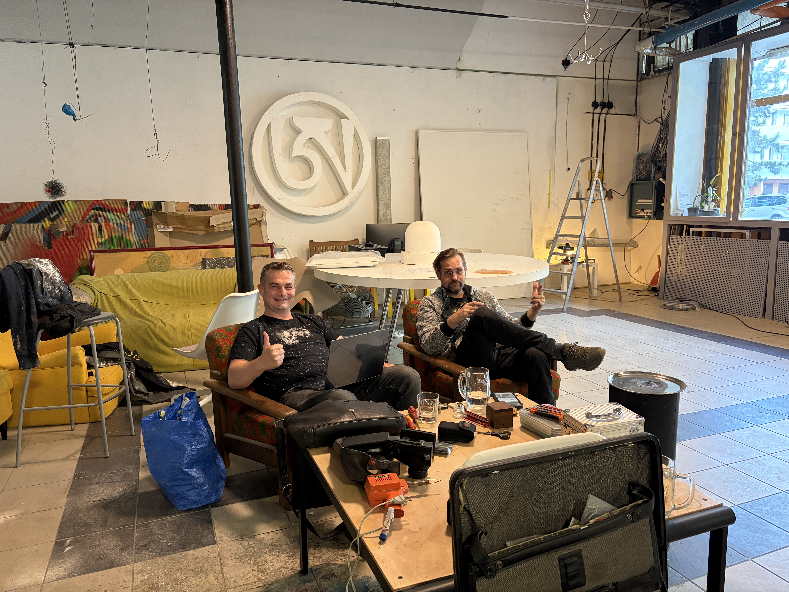

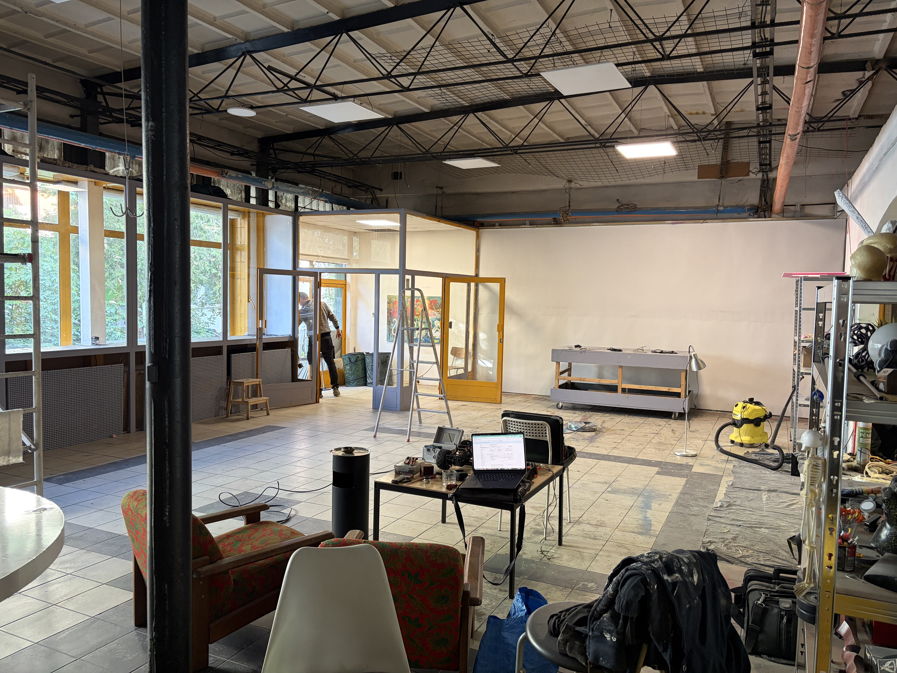
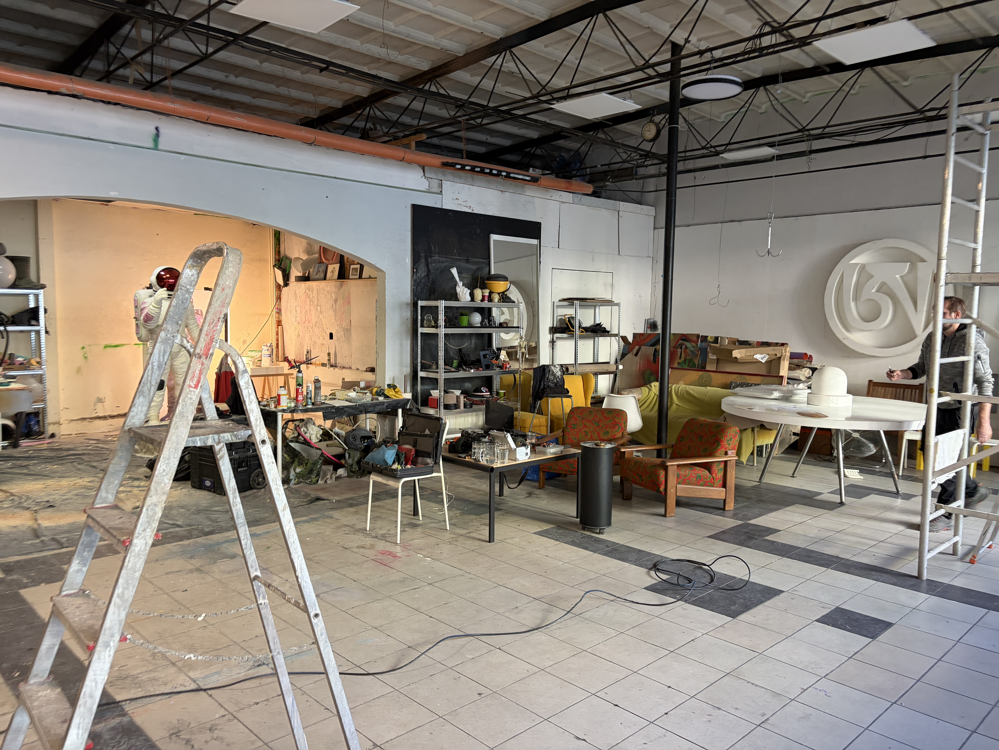
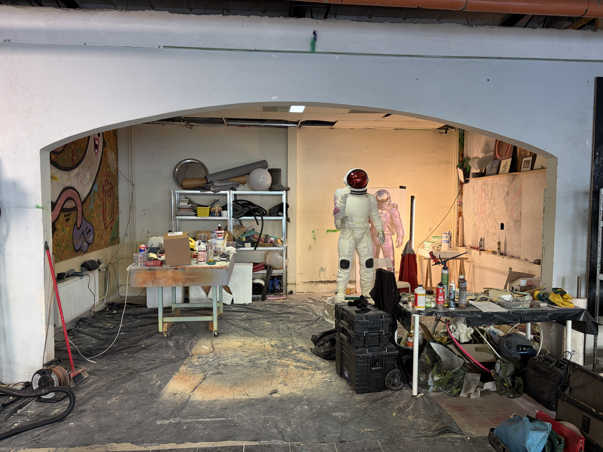

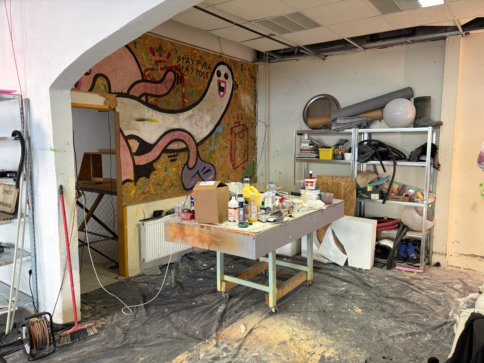
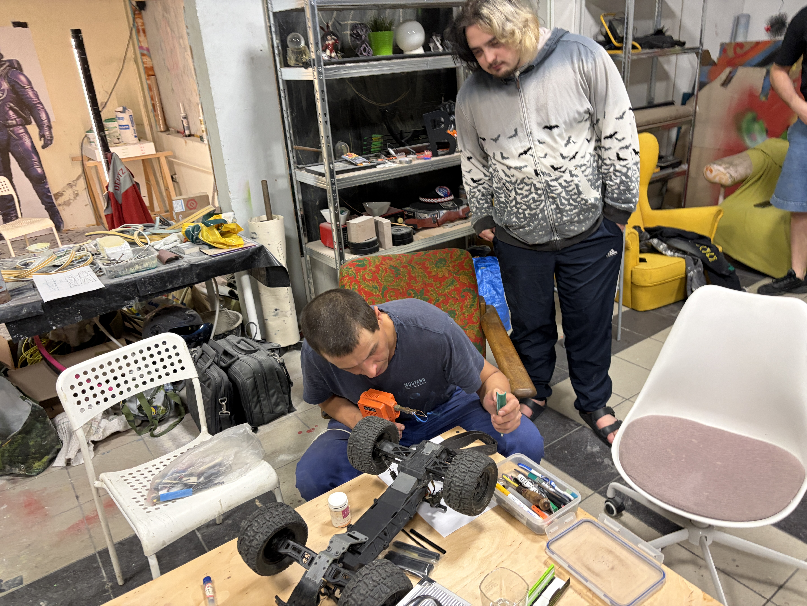

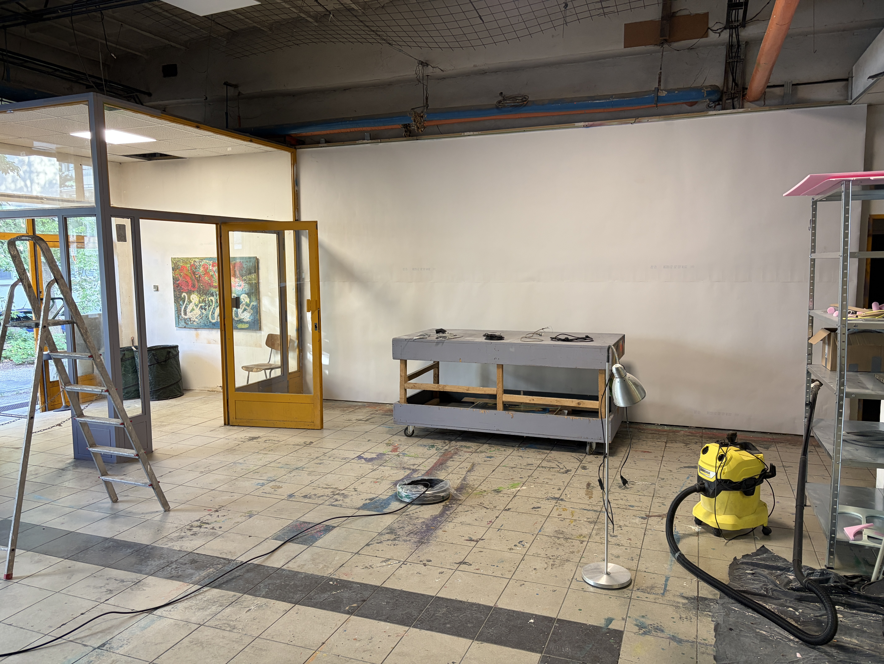

Máj 2025 Budovanie prebieha. 12 záberov z aktívnej premeny priestoru.
Priestor pre subkultúrne umenie, street art, fotografiu, grafiku, ilustráciu, objekty a experimentálne formy vizuálnej tvorby.
Otvorenia výstav, diskusie, malé koncerty, DJ sety, premietania a komunitné večery.
Tvorivé dielne, tlač, ziny, malé vydavateľské projekty, komunitné knižnice a otvorené ateliéry.
Miesto pre stretávanie, spoluprácu, lokálne iniciatívy, dobrovoľníkov, autorov a návštevníkov.
Päť obrazov toho, čím môže OST 960 byť — od galérie a vernisáží cez komunitné dielne až po živé nočné eventy.
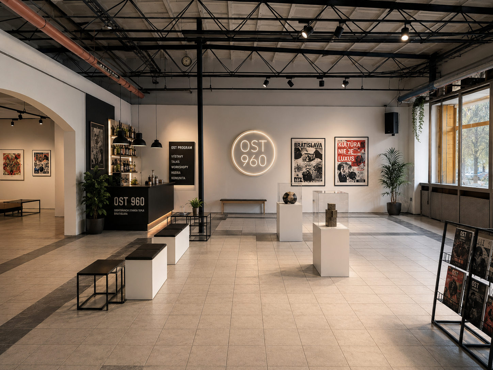
Výstavy, skulptúry, posterová kultúra a otvorený priestor pre umenie.
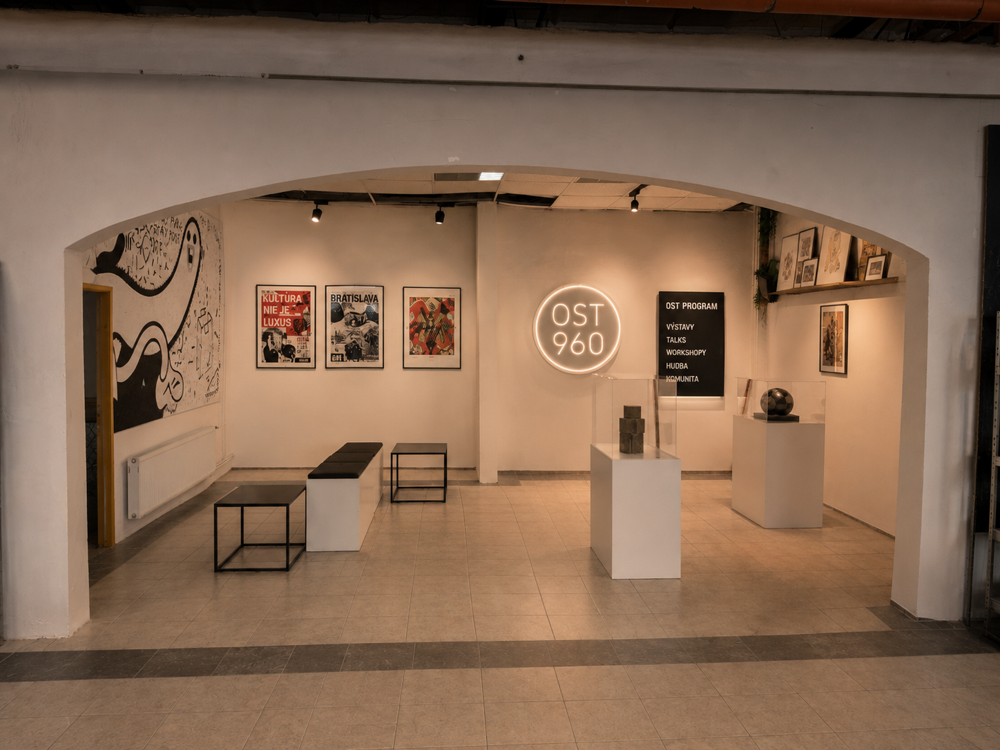
Historická klenba ako vstup do intímneho výstavného priestoru.
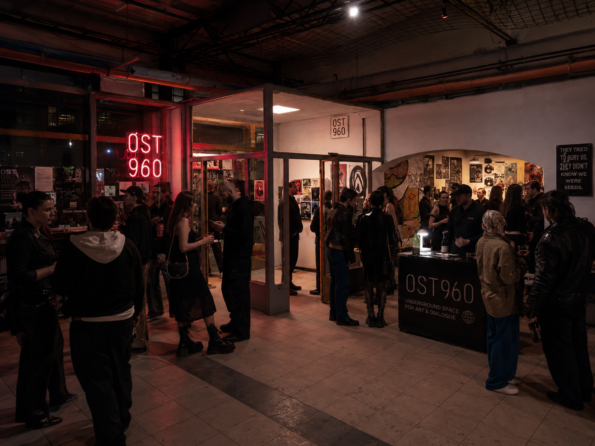
Raw energia, neon, dav, subkultúra. Živý nočný program.

Otvorenie výstavy, ľudia, umenie, rozhovory a komunita.

Denný komunitný priestor — workshopy, ziny, tvorba, káva.
Bratislava potrebuje dostupné nezávislé priestory, ktoré dávajú šancu mladým autorom, subkultúrnej scéne a komunitám mimo klasických inštitúcií. OST 960 môže byť miestom, ktoré prepája verejnosť, lokálnych tvorcov a mestskú kultúru v autentickom industriálnom priestore.
Hľadáme partnerov, podporovateľov, dobrovoľníkov, umelcov a ľudí, ktorí chcú pomôcť premeniť OST 960 na živý kultúrny priestor v Karlovej Vsi.
Projekt je v príprave. Ak máte záujem o spoluprácu, partnerstvo alebo chcete vedieť viac — ozvite sa nám.
info@ost960.skKontaktné údaje sa aktualizujú — projekt je aktívne v príprave.